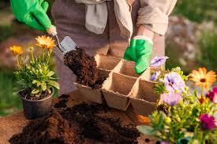
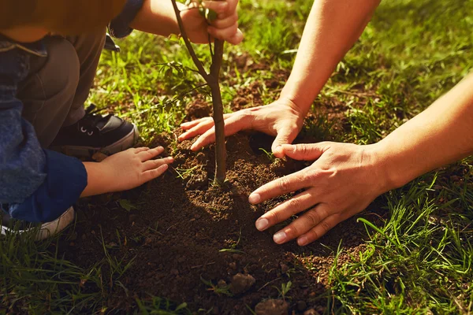
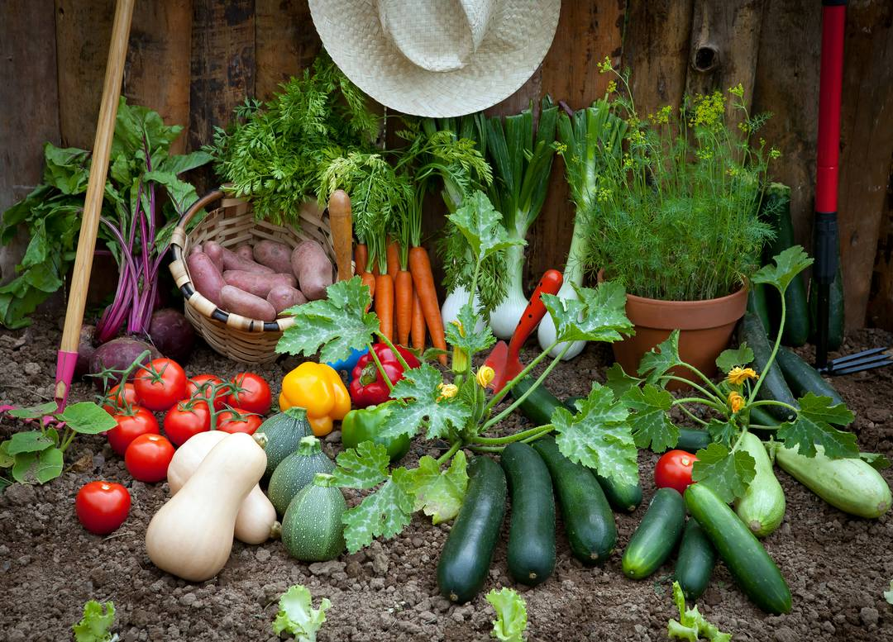
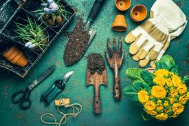
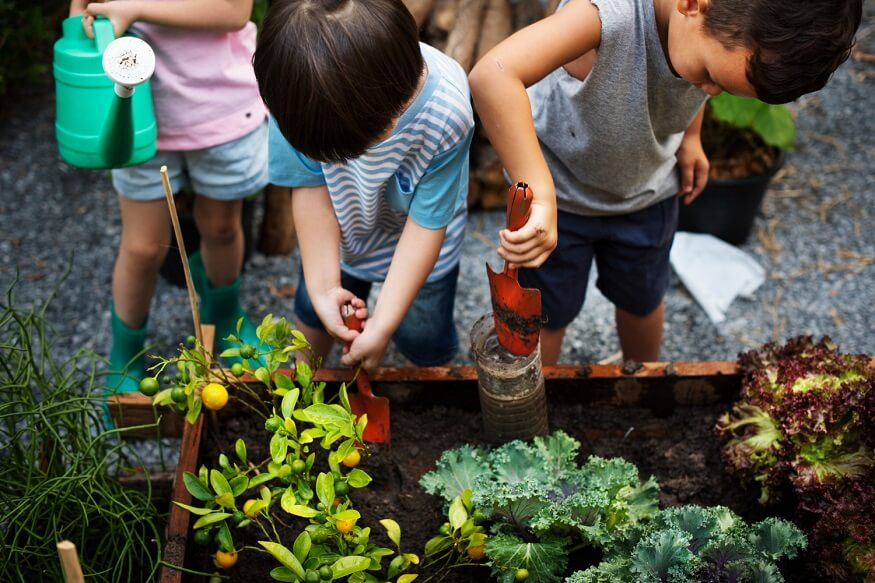

The Garden Network serves as a hub of the garden community by:
- connecting garden coordinators, volunteers and gardeners to one another to share, support and learn from each other through hosting regular meetings, workshops and events
- providing resources and support to residents and organizations to start, maintain or participate in community gardens
- promoting residents to find garden space through our interactive garden directory and map
- advocating on behalf of gardens to the broader public, local businesses and governments through raising awareness about the benefits of gardens, recommending best practices and supporting policy and resource development

find space to grow

start a community garden

coordination & volunteering

diverse, inclusive, equitable, accessible gardens

gardening info
